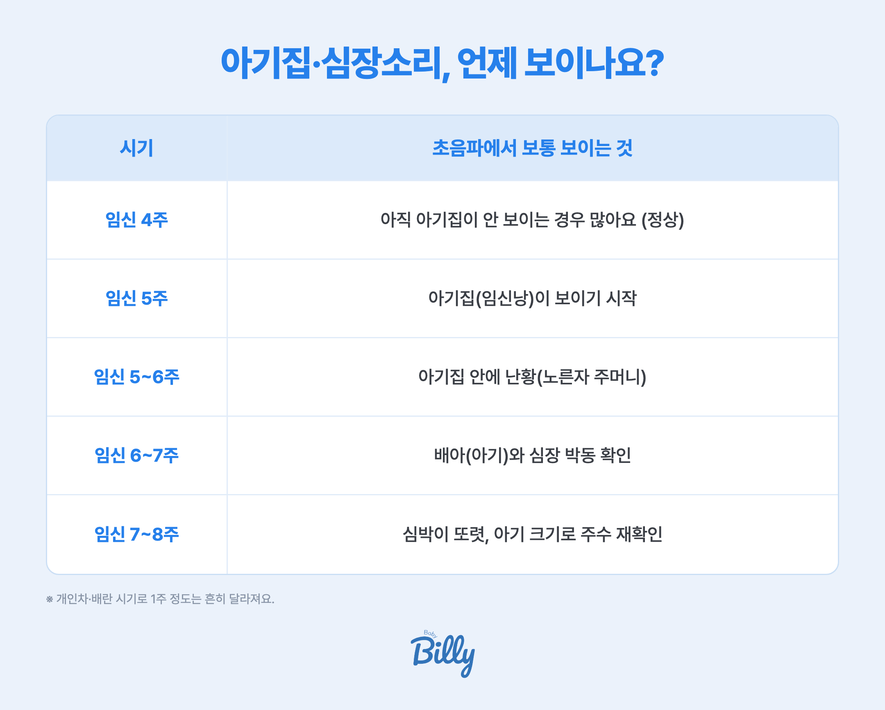

- 아기집(임신낭)은 보통 임신 5주경, 심장소리(심박)는 6~7주경에 질 초음파로 확인돼요
- 임신 4주~5주 초반에 아직 안 보여도 정상인 경우가 많아요
- 대부분 며칠~1주 뒤 다시 보면 확인되지만, 심한 아랫배 통증+출혈, 심한 어지럼은 지체 말고 병원에 가세요
아기집은 언제 보이나요?
아기집(임신낭)은 아기가 자리 잡는 작은 주머니예요. 보통 임신 5주 무렵 질 초음파로 보이기 시작해요. 임신 주수는 마지막 생리 시작일을 기준으로 세는데, 이때는 임신 호르몬(hCG)이 충분히 올라야 초음파에 잡혀요.

| 시기 | 초음파에서 보통 보이는 것 |
|---|---|
| 임신 4주 | 아직 아기집이 안 보이는 경우가 많아요 (정상) |
| 임신 5주 | 아기집(임신낭)이 보이기 시작 |
| 임신 5~6주 | 아기집 안에 난황(노른자 주머니) |
| 임신 6~7주 | 배아(아기)와 심장 박동 확인 |
| 임신 7~8주 | 심박이 또렷, 아기 크기로 주수 재확인 |
※ 개인차와 배란 시기 차이로 1주 정도는 흔히 달라져요. 위는 일반적인 순서예요.
심장소리(심박)는 언제부터 확인되나요?
아기 심장 박동은 보통 임신 6~7주에 초음파로 확인돼요. 아기집이 먼저 보이고, 그다음 난황, 그다음 배아와 심장 박동 순서로 나타나요. 그래서 아기집은 보이는데 심장소리가 아직 안 들리는 건 시기상 자연스러운 경우가 많아요.
"아직 안 보여요"… 괜찮은 걸까요?
가장 많이 걱정하는 부분이에요. 결론부터 말하면 초반에 안 보이는 건 정상인 경우가 아주 많아요. 이유는 이래요.
- 배란이 늦었을 때 — 생리 주기가 길거나 배란이 늦으면, 계산상 주수보다 실제 아기는 며칠 더 어려요. 그래서 "5주인데 안 보여요"가 실제론 4주 중반일 수 있어요.
- 너무 일찍 갔을 때 — 임신 확인이 반가워 4주 초에 가면, 아직 아기집이 안 보이는 게 당연해요.
- 기다리면 보이는 경우 — 그래서 병원에서도 보통 며칠~1주 뒤 다시 오라고 해요. 다음에 가면 보이는 경우가 많아요.
이럴 땐 병원에 바로 가세요
- 한쪽 아랫배가 심하게 아프고 출혈을 동반 → 자궁외임신 의심
- 선홍색 출혈이 많고 덩어리가 나옴 → 유산 신호 가능
- 심한 어지럼·실신, 어깨 통증 → 자궁외임신 파열 응급
- 임신 7주가 넘었는데 심장 박동이 확인되지 않을 때 → 의사와 상담(추가 확인 필요)
※ 위 신호가 있다고 반드시 문제가 있는 건 아니지만, 안전을 위해 빨리 진료받는 것이 좋아요.
베동 엄마들도 가장 많이 물어봐요
베이비빌리 베동 커뮤니티에서 임신 초기(1~3개월) 엄마들이 올린 글을 분석해 보니, 아기집 이야기 1,407건 · 심장소리(심박) 829건으로 초기 최다 화제 중 하나였어요. 그리고 그 대부분이 "확인"보다 "괜찮은 걸까?"라는 걱정이었어요.
| 실제로 많이 나온 이야기 | 건수 |
|---|---|
| 아기집 언급 글 | 1,407건 |
| └ 그중 "괜찮은지·정상인지" 걱정 | 624건 (44%) |
| └ 그중 "아직 안 보여요" | 305건 |
| 심장소리·심박 언급 글 | 829건 |
※ 베이비빌리 베동 커뮤니티 임신 초기(1~3개월) 글 분석 (2025-08~2026-08). 한 글이 여러 주제를 언급할 수 있어요.
📱 내 주차엔 뭐가 보일까? 매일 알려드려요
주차마다 초음파에서 보이는 것도, 챙길 것도 달라져요. 베이비빌리 앱이 내 예정일 기준으로 "이번 주 아기는 이만큼 자랐어요"를 매일 알려드려요. 첫 초음파까지 마음 편히 함께할게요.
베이비빌리 앱에서 내 주차 보기 →자주 묻는 질문
보통 임신 5주 무렵 질 초음파로 아기집(임신낭)이 보이기 시작해요. 임신 4주 초반엔 아직 안 보이는 게 정상이에요.
배란이 늦었다면 실제 주수가 예상보다 어려서 아직 안 보일 수 있어요. 심한 출혈·복통이 없다면 보통 며칠~1주 뒤 다시 확인하면 보이는 경우가 많아요.
보통 임신 6~7주에 초음파로 심장 박동이 확인돼요. 6주에 안 보여도 7주경 다시 확인하는 경우가 많아요.
배아와 심장 박동은 아기집보다 조금 늦게 나타나요. 임신 6~7주 전이면 이른 것일 수 있어 재확인해요. 7주가 넘어도 안 보이면 의사와 상담하세요.
심한 아랫배 통증과 출혈, 심한 어지럼·실신이 있으면 즉시 병원에 가세요. 자궁외임신이나 유산의 신호일 수 있어요.
함께 보면 좋은 가이드
참고 자료
- 대한산부인과학회, 임신 초기 초음파 안내. 대한산부인과학회
- American College of Obstetricians and Gynecologists, Early Pregnancy / Ultrasound. ACOG
- 보건복지부 국가건강정보포털, 임신·출산 정보. 국가건강정보포털
※ 본 페이지의 의학 정보는 대한산부인과학회·ACOG·보건복지부 자료와 베이비빌리 베동 커뮤니티를 기반으로 정리한 일반 안내예요. 초음파로 보이는 시기는 개인·배란 시기마다 달라, 걱정되는 증상이 있으면 산부인과 진료를 받아 주세요. 특정 상품을 권유하지 않습니다.